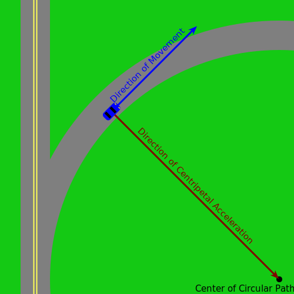

When an object is going around a curve, centripetal acceleration is what pulls that object towards the center of the circular path it is traveling in, allowing that object to turn rather than traveling in a straight line.
This can sometimes be a tricky concept to understand. After all, if you are in a vehicle driving around in a circle at a constant speed of 20mph, how can you be accelerating? You're not speeding up or slowing down.
True, your speed isn't changing. But if you're not accelerating towards a point, your vehicle will simply travel in a straight line.
Take a look at the diagram below:
Notice the blue arrow, labeled "Direction of Movement". If the car wasn't accelerating in a specific direction, it would simply follow the direction of this arrow. However, due to the friction between the road and the tires of the car, the car is being accelerated towards the point labeled "Center of Circular Path".
The car is getting farther away from this point simply because of its direction of movement, but it is also being accelerated, with centripetal acceleration, towards it. These two things happening at the same time cancel each other out in a delicate balance, keeping the car the same distance away from the point while still technically accelerating towards it.
This is why you are pushed to one side of your car when you go around a sharp bend. Centripetal acceleration is accelerating the vehicle to your right or to your left, depending on which direction you are turning in. So, in the same way you may be pressed against the back of your seat when you accelerate quickly forward, you are pressed against your left door when you make a right turn.